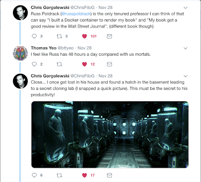

This was originally posted on Blogger here.
Apparently some people seem to think my level of productivity is simply not humanly possible:

For the record, there is no cloning lab in my basement. I attribute my productivity largely to a combination of mild obsessive/compulsive tendencies and a solid set of tools that help me keep from feeling overwhelmed when the to-do list gets too long. I can’t tell you how to become optimally obsessive, but I can tell you about my productivity stack, which I hope will be helpful for some of you who are feeling increasingly overwhelmed as you gain responsibilities.
Platform: MacBook Pro 13” + Mac OS X
- I have flirted with leaving the Mac as the OS has gotten increasingly annoying and the hardware increasingly crappy, but my month-long trial period with a Windows machine left me running back to the Mac (mostly because the trackpad behavior on the Dell XPS13 was so bad). Despite the terrible keyboard (I’ve had two of them replaced so far) and the lack of a physical escape key, the 13” Macbook Pro is a very good machine for working on the road - it’s really light and the battery life is good enough that I rarely have to plug in, even on a long flight from SFO to the east coast. In the old days I would invert my screen colors to reduce power usage, but now I just use Dark Mode in the latest Mac OSX.
- I keep a hot spare laptop (a previous-generation Macbook Pro) synced to all of my file sharing platforms (Dropbox, Box, and Google Drive) in case my primary machine were to die suddenly. Which has happened. And will happen again. If you can afford to have a second laptop I would strongly suggest keeping a hot spare in the wings.
- I don’t have a separate desktop system in my office - when I’m there I just plug into a larger monitor and work from my laptop. In the past I had separate desktop and laptop systems but just found it too easy for things to get desynchronized.
- Pro Tip: About once a month I run the Onyx maintenance scripts, run the DiskUtility file system repair, and clone my entire system to a lightweight 1TB external drive (encrypted, of course) using CarbonCopyCloner. Having a full disk backup in my backpack has saved me on a few occasions when things went wrong while traveling.
Mobile: Pixel 2 + Google Fi
- I left the iPhone more than a year ago now and have not looked back. The Pixel 2 is great and Google Fi wireless service is awesome, particularly if you travel a lot internationally, since data costs the same almost everywhere on earth. If you want to sign up, use my referral link and you’ll get a $20 credit (full disclosure - I will get a $100 credit).
Email: Gmail
- For many years I used the Mac Mail.app client, but as it became increasingly crappy I finally gave up and moved to the GMail web client, which has been great. The segregation of promotion and social emails, and new features like nudges, make it a really awesome mail client.
- My email workflow is a lazy adaptation of the GTD system: I try not to leave anything in my inbox for more than a day or so (unless I’m traveling). I either act on it immediately, decide to ignore/delete it, or put it straight into my todo list (and archive the message so it’s no longer in my inbox). I’m rarely at inbox zero, but I usually manage to keep it at 25 or fewer messages, so I can see it all in a single screen.
To do list: Todoist
- I moved to Todoist a couple of years ago and have been very happy with it. It’s as simple as it needs to be, and no simpler. The integration with GMail is particularly nice.
Calendar: Google Calendar
- The integration between my Android device and Gmail across platforms makes this a no-brainer.
Notes: Evernote
- Evernote is my go-to for note-taking during meetings, talks, and whenever I just want to write something down.
Lab messaging: Slack
- I really don’t love Slack (because I feel that it’s too easy for things to get lost when a channel is busy), but it has become our lab’s main platform for messaging. We’ve tried alternatives but they have never really stuck.
Safe Surfing: Private Internet Access VPN + UBlock Origin/Privacy Badger
- Whenever I’m on a public network I stay safe by using the Private Internet Access VPN, which works really well across every platform I have tested it. (and you can pay for it with Bitcoin!)
- When surfing in Chrome I use UBlock Origin and Privacy Badger extensions to prevent trackers.
Writing: Google Docs/TexShop
- For collaborative writing we generally stick to Google Docs, which just works. Paperpile is a very effective reference management system.
- For my own longer projects (like books) I write in LaTeX using TexShop, with BibDesk for bibliography management, via the MacTex distribution. If I were writing a dissertation today I would definitely use LaTeX, as I have seen too many students scramble as Microsoft Word screwed up their huge dissertation file. Some folks in the lab use Overleaf, which I like, but I also do a lot of writing while offline so a web-based solution isn’t optimal for me.
Presentations: Keynote
- I have tried at various points to leave Keynote, but always came crawling back. It’s just so easy to create great-looking presentations, and as cool as it would be to build them in LaTeX, I would have nightmares involving the inability to compile my presentation 3 minutes before my talk.
Art: Affinity Designer
- I gave up on Adobe products when they moved to a subscription model. For vector art, I really like Affinity Designer, though it does have a pretty substantial learning curve. I’ve tried various freeware alternatives but none of them work very well.
Coding in R: Rstudio
- If you’ve read my statistics book you know that I have a love/hate relationship with R, and most of the love comes from RStudio, which is an excellent IDE. Except for code meant to run on the supercomputer, I write nearly all of my R code in RMarkdown Notebooks, which are the best solution for literate programming that I have seen.
Coding in Python: Anaconda + Jupyter Lab/Atom
- Python is my language of choice for most coding problems, and Anaconda has pretty much everything I need for scientific Python.
- For interactive coding (e.g. for teaching or exploration) I use Jupyter Lab, which has matured nicely.
- For non-interactive coding (e.g. for code that will run on the supercomputer) I generally use Atom which is nice and simple but gets the job done.
Hopefully these tips are helpful - now back to getting some real work done!
4 comments captured from the original post
Anonymous · 2018-12-03
Anonymous · 2018-12-03
DoctorMagnet · 2018-12-03
∂嘈´¬ · 2018-12-04